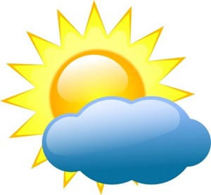

<h1>OpenWeatherMap.org API Test</h1>
<p>The current temperature in Fairbanks, Alaska is <span id="current-temp"></span> &deg;F</p>
<h2>Current Condition Icon</h2>
<figure>
  
  <figcaption></figcaption>
</figure>
<script src="scripts/weatherapi.js"></script>